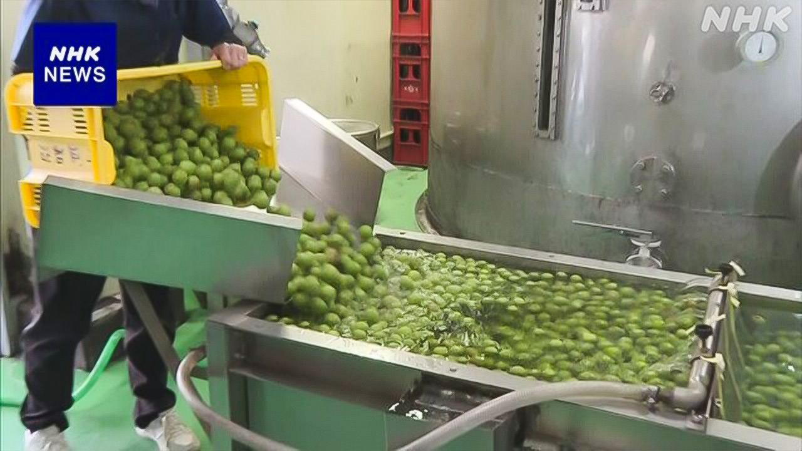

最新ニュース
1️⃣ プロ野球の巨人の阿部監督が警察に捕まって監督をやめた
プロ野球のチーム「巨人」の阿部慎之助監督が、警察に捕まって、そのあとで監督をやめました。
警察などによると、阿部監督は25日の夜、家で子どものけんかを止めようとして、18歳の娘を押して倒したそうです。
娘は、AIにどうしたらいいか聞きました。AIは児童相談所というところに相談できると答えました。それで娘が児童相談所に電話をすると、話が警察に伝わって、警察が阿部監督を逮捕しました。
娘は「父が警察に連れて行かれて泣いてしまいました。父とはいつも笑って話す関係です」と言っています。
阿部監督は、すぐに警察から家に帰りました。しかし、多くの人に迷惑をかけたと言って、26日に監督をやめました。
2️⃣ 夏に使う電気など いつもの年と同じように大事に使ってほしい
夏になると、たくさんの人がエアコンなどを使うため電気が足りなくなるかもしれません。
政府は26日、今年の夏もいつもの年と同じように電気などを大事に使ってほしいと、会社や家庭にお願いしました。
家庭では、エアコンの温度をあまり低くしすぎないことが大切です。部屋の明るさを下げるというやり方もあります。
車を運転する人は、出発するときスピードをゆっくり上げると、使うガソリンなどを少なくできます。
赤澤経済産業大臣は「石油などは必要な量はあるので、いつもどおりの節約をお願いしたい」と言っています。
3️⃣ 「ハンズ渋谷店」ことし11月で店を閉める
48年前から東京の渋谷にある有名な店が、ことし11月で店を閉めることになりました。
「ハンズ渋谷店」です。
文房具など生活に使うものから専門的なものまでいろいろなものを売っていて、人気がありました。
会社は、店を続けるために建物を持っている会社と話をしてきたが、まとまらなかったと言っています。
街の人は「普通の店では売ってないものを買うことができた店でした。なくなるのは残念です」と話しています。
渋谷のシンボルのような店がまたひとつなくなります。
4️⃣ 大分県日田市 「梅酒」をつくる仕事が始まった

九州の大分県日田市は、梅をたくさん育てています。
日田市の会社で、梅を使ったお酒「梅酒」をつくる仕事が始まりました。
25日は、取ったばかりの「鶯宿梅」という梅が運ばれました。
機械を使って洗ったあと、梅をアルコールが入った大きいタンクに入れました。
会社は、ほとんどの梅酒をタンクの中に3年ぐらい入れたままにしてから、売ります。
会社によると、最近は台湾や香港でも買う人が多いそうです。
- 〜後 / 〜あと
- 〜あとで / 〜後で
- 〜など
- 〜として
- 〜そうだ
- 〜によると
- 〜という
- 〜ところ
- 〜てしまう
- 〜ている / 〜でいる
- 〜から
- 〜かもしれない / 〜かもしれません
- 〜になる
- 〜ため
- 〜ように
- 〜こと
- 〜すぎる
- 〜方
- 〜ので
- 〜ことになる
- 〜から〜まで
- 〜まで
- 〜がある / 〜がいる
- 〜ため(に)
- 〜ことができる
- 〜ような
- 〜たばかり
- 〜ばかり
- 〜てから
- 〜中
- 〜くらい / 〜ぐらい
- 〜ても / 〜でも
vebaev.github.io
Generated: 2026-05-26 15:36:02 UTC